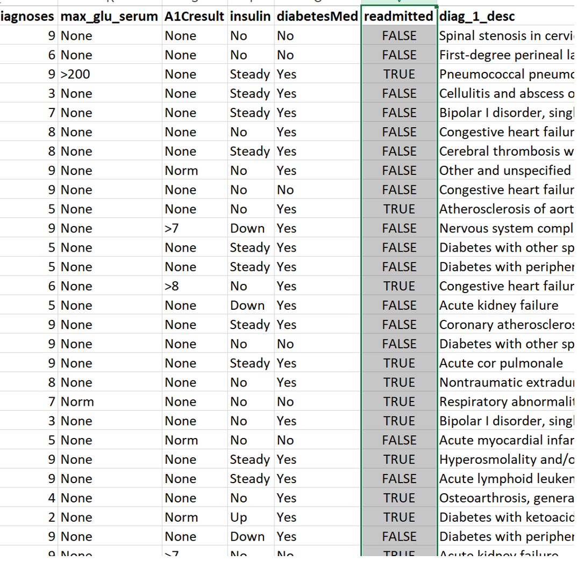
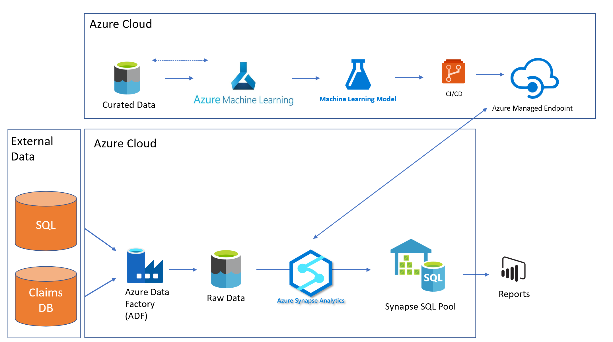

Readmission Use Case
Using Azure Data and AI services to build, deploy and operationalize a model to predict hospital readmissions.
Readmission Use Case Details
- Source: 10K Diabetes data set from https://www.kaggle.com/mathchi/diabetes-data-set
- Use Case Details: The use case combines clinical and demographic for diabetes patients that were admitted to the hospital.
- Target Variable: Readmitted which indicates whether a patient was readmitted back to the hospital within 30 days of discharge.
- Size: 10k records with 25 fields containing numerical, categorical and text features.
Readmission Use Case Data

- Target Variable: Readmitted: True/False was the patient readmitted.
- Candidate Predictor Variables include:
- Numerical: Number_diagnoses, Time_in_hospital, Numer_of_medications
- Categorical: Gender, Race, Primary_diagnosis, Payer
- Text: Diagnosis_Description
Architecture

Key Architectural Decisions
- Azure Machine Learning: Contains wide tool set to prepare data then build models with flexibility for varying skill sets and tool preferences. Scales well with different organizations.
- Managed Endpoints: Low overhead method for deploying ML models using either real time endpoints or batch endpoints.
- Azure Data Factory: Robust tool for moving data into data lake storage.
- Synapse Analytics: Offers Synapse Workspace which allows engineers to create transformation pipelines in either Spark or TSQL.
- Synapse SQL Pools: High performance SQL engine that connects well other tools to materialize results (such as Power BI).
Detailed Architecture